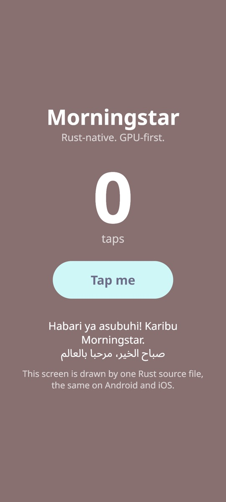
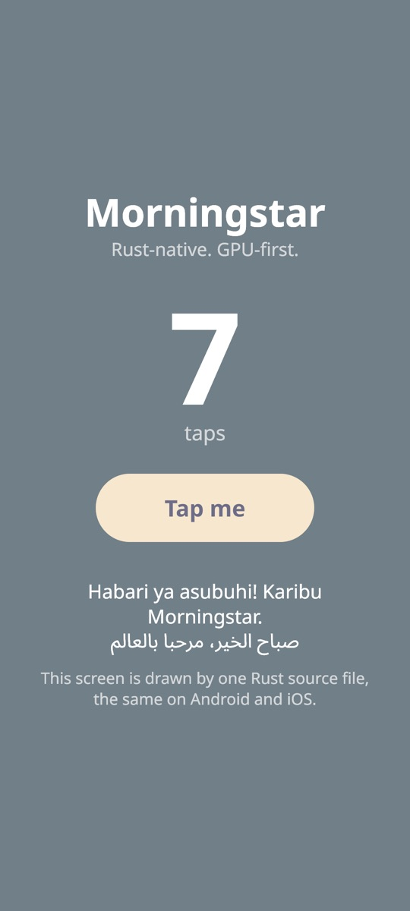

hello-gpu
The low-level example. It does not use the UI layer: it implements the runtime's App trait directly, paints its own display list and does its own hit-testing. Read it to see what is underneath, not as a way to write an app.


What it shows
- The engine's contract with an app: lifecycle in, a display list out.
- Drawing operations by hand: rectangles, text, the safe area.
- Text in three scripts on one screen, including Arabic.
- It is the default app of
tools/build-android.sh, and was the first thing drawn on a phone.
Run it
cargo run -p hello-gpu --example screenshot out/
tools/build-android.sh --install
cargo ndk -t arm64-v8a clippy -p hello-gpu